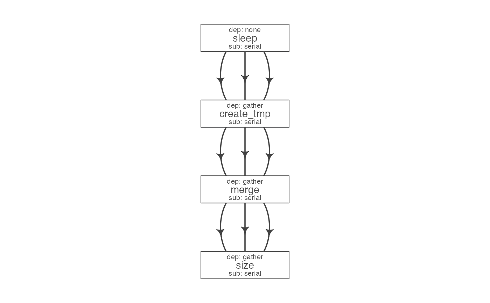
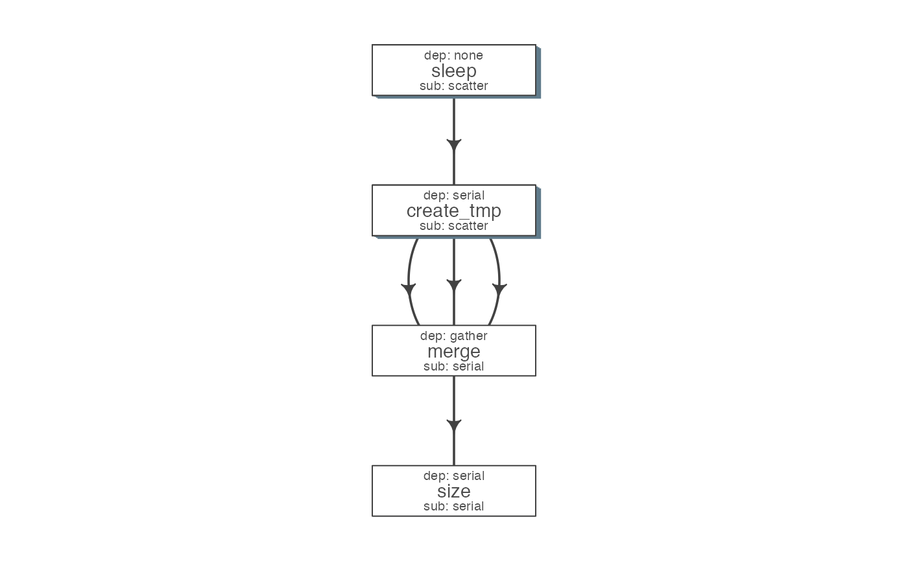

This function enables creation of a skeleton flow definition with several default values, using a flowmat. To customize the flowdef, one may supply parameters such as sub_type and dep_type upfront. As such, these params must be of the same length as number of unique jobs using in the flowmat.
Each row in this table refers to one step of the pipeline. It describes the resources used by the step and also its relationship with other steps, especially, the step immediately prior to it. <br><br>
Submission types: This refers to the sub_type column in flow definition.<br>
Consider an example with three steps A, B and C. A has 10 commands from A1 to A10, similarly B has 10 commands B1 through B10 and C has a single command, C1. Consider another step D (with D1-D3), which comes after C.
step (number of sub-processes) A (10) ----> B (10) -----> C (1) -----> D (3)
scatter: submit all commands as parallel, independent jobs.
Submit A1 through A10 as independent jobs
serial: run these commands sequentially one after the other.
- Wrap A1 through A10, into a single job.
Dependency types
This refers to the dep_type column in flow definition.
none: independent job.
Initial step A has no dependency
serial: one to one relationship with previous job.
B1 can start as soon as A1 completes, and B2 starts just after A2 and so on.
gather: many to one, wait for all commands in the previous job to finish then start the current step.
All jobs of B (1-10), need to complete before C1 starts
burst: one to many wait for the previous step which has one job and start processing all cmds in the current step.
- D1 to D3 are started as soon as C1 finishes.
to_flowdef(x, ...) # S3 method for flowmat to_flowdef( x, sub_type, dep_type, prev_jobs, queue = "short", platform = "torque", memory_reserved = "2000", cpu_reserved = "1", nodes = "1", walltime = "1:00", guess = FALSE, verbose = opts_flow$get("verbose"), ... ) # S3 method for flow to_flowdef(x, ...) # S3 method for character to_flowdef(x, ...) as.flowdef(x, ...) is.flowdef(x)
| x | can a path to a flowmat, flowmat or flow object. |
|---|---|
| ... | not used |
| sub_type | submission type, one of: scatter, serial. Character, of length one or same as the number of jobnames |
| dep_type | dependency type, one of: gather, serial or burst. Character, of length one or same as the number of jobnames |
| prev_jobs | previous job name |
| queue | Cluster queue to be used |
| platform | platform of the cluster: lsf, sge, moab, torque, slurm etc. |
| memory_reserved | amount of memory required. |
| cpu_reserved | number of cpu's required. [1] |
| nodes | if you tool can use multiple nodes, you may reserve multiple nodes for it. [1] |
| walltime | amount of walltime required |
| guess | should the function, guess submission and dependency types. See details. |
| verbose | A numeric value indicating the amount of messages to produce.
Values are integers varying from 0, 1, 2, 3, .... Please refer to the verbose page for more details.
|
This is a tab separated file, with a minimum of 4 columns:<br>
required columns:<br>
jobname: Name of the step
sub_type: Short for submission type,
refers to, how should multiple commands of this step be submitted. Possible values are `serial` or `scatter`.
prev_jobs: Short for previous job, this would be the jobname of the previous job.
This can be NA/./none if this is a independent/initial step, and no previous step is required for this to start.
Additionally, one may use comma(s) to define multiple previous jobs (A,B).
dep_type: Short for dependency type,
refers to the relationship of this job with the one defined in `prev_jobs`.
This can take values `none`, `gather`, `serial` or `burst`.
resource columns (recommended):<br>
Additionally, one may customize resource requirements used by each step. The format used varies and depends to the computing platform. Thus its best to refer to your institutions guide to specify these.
cpu_reserved integer, specifying number of cores to reserve [1]
memory_reserved Usually in KB [2000]
nodes number of server nodes to reserve, most tools can only use multiple cores on
a single node [1]
walltime maximum time allowed for a step, usually in a HH:MM or HH:MM:SS format. [1:00]
queue the queue to use for job submission [short]
NOTE: Guessing is an experimental feature, please check the definition carefully. it is provided to help but not replace your best judgement. <br>
Optionally, one may provide the previous jobs and flowr can try guessing the appropriate submission and dependency types. If there are multiple commands, default is submitting them as scatter, else as serial. Further, if previous job has multiple commands and current job has single; its assumed that all of the previous need to complete, suggesting a gather type dependency.
# see ?to_flow for more examples # read in a tsv; check and confirm format ex = file.path(system.file(package = "flowr"), "pipelines") # read in a flowdef from file flowdef = as.flowdef(file.path(ex, "sleep_pipe.def"))#>#>#>#>#>#>#>#># check if this a flowdef is.flowdef(flowdef)#> [1] TRUE#>#>#>#>to_flowdef(flowmat)#>#>#>#>#>#>#>#>#>#> jobname sub_type prev_jobs dep_type queue memory_reserved walltime #> 1 sleep serial none none short 2000 1:00 #> 2 create_tmp serial sleep gather short 2000 1:00 #> 3 merge serial create_tmp gather short 2000 1:00 #> 4 size serial merge gather short 2000 1:00 #> cpu_reserved nodes platform jobid #> 1 1 1 torque 1 #> 2 1 1 torque 2 #> 3 1 1 torque 3 #> 4 1 1 torque 4# change the platform to_flowdef(flowmat, platform = "lsf")#>#>#>#>#>#>#>#>#>#> jobname sub_type prev_jobs dep_type queue memory_reserved walltime #> 1 sleep serial none none short 2000 1:00 #> 2 create_tmp serial sleep gather short 2000 1:00 #> 3 merge serial create_tmp gather short 2000 1:00 #> 4 size serial merge gather short 2000 1:00 #> cpu_reserved nodes platform jobid #> 1 1 1 lsf 1 #> 2 1 1 lsf 2 #> 3 1 1 lsf 3 #> 4 1 1 lsf 4# change the queue name def = to_flowdef(flowmat, platform = "lsf", queue = "long")#>#>#>#>#>#>#>#>#># guess submission and dependency types def2 = to_flowdef(flowmat, platform = "lsf", queue = "long", guess = TRUE)#>#>#>#>#>#>#>#>#>#>#>#>#>#>